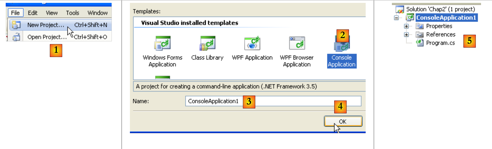
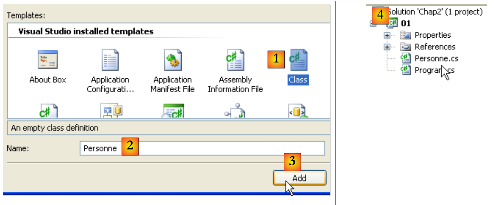

4. Classes, Stuctures, Interfaces
4.1. L' objet par l'exemple
4.1.1. Généralités
Nous abordons maintenant, par l'exemple, la programmation objet. Un objet est une entité qui contient des données qui définissent son état (on les appelle des champs, attributs, ...) et des fonctions (on les appelle des méthodes). Un objet est créé selon un modèle qu'on appelle une classe :
A partir de la classe C1 précédente, on peut créer de nombreux objets O1, O2,… Tous auront les champs p1, p2,… et les méthodes m3, m4, … Mais ils auront des valeurs différentes pour leurs champs pi ayant ainsi chacun un état qui leur est propre. Si o1 est un objet de type C1, o1.p1 désigne la propriété p1 de o1 et o1.m1 la méthode m1 de O1.
Considérons un premier modèle d'objet : la classe Personne.
4.1.2. Création du projet C#
Dans les exemples précédents, nous n'avions dans un projet qu'un unique fichier source : Program.cs. A partir de maintenant, nous pourrons avoir plusieurs fichiers source dans un même projet. Nous montrons comment procéder.
 |
En [1], créez un nouveau projet. En [2], choisissez une Application Console. En [3], laissez la valeur par défaut. En [4], validez. En [5], le projet qui a été généré. Le contenu de Program.cs est le suivant :
Sauvegardons le projet créé :
 |
En [1], l'option de sauvegarde. En [2], désignez le dossier où sauvegarder le projet. En [3], donnez un nom au projet. En [5], indiquez que vous voulez créer une solution. Une solution est un ensemble de projets. En [4], donnez le nom de la solution. En [6], validez la sauvegarde.
 |
En [1], le projet sauvegardé. En [2], ajoutez un nouvel élément au projet.
 |
En [1], indiquez que vous voulez ajouter une classe. En [2], le nom de la classe. En [3], validez les informations. En [4], le projet [01] a un nouveau fichier source Personne.cs :
On modifie l'espace de noms de chacun des fichiers source en Chap2 et on supprime l'importation des espaces de noms inutiles :
4.1.3. Définition de la classe Personne
La définition de la classe Personne dans le fichier source [Personne.cs] sera la suivante :
Nous avons ici la définition d'une classe, donc d'un type de données. Lorsqu'on va créer des variables de ce type, on les appellera des objets ou des instances de classe. Une classe est donc un moule à partir duquel sont construits des objets.
Les membres ou champs d'une classe peuvent être des données (attributs), des méthodes (fonctions), des propriétés. Les propriétés sont des méthodes particulières servant à connaître ou fixer la valeur d'attributs de l'objet. Ces champs peuvent être accompagnés de l'un des trois mots clés suivants :
Un champ privé (private) n'est accessible que par les seules méthodes internes de la classe | |||
Un champ public (public) est accessible par toute méthode définie ou non au sein de la classe | |||
Un champ protégé (protected) n'est accessible que par les seules méthodes internes de la classe ou d'un objet dérivé (voir ultérieurement le concept d'héritage). |
En général, les données d'une classe sont déclarées privées alors que ses méthodes et propriétés sont déclarées publiques. Cela signifie que l'utilisateur d'un objet (le programmeur)
- n'aura pas accès directement aux données privées de l'objet
- pourra faire appel aux méthodes publiques de l'objet et notamment à celles qui donneront accès à ses données privées. La syntaxe de déclaration d'une classe C est la suivante :
L'ordre de déclaration des attributs private, protected et public est quelconque.
4.1.4. La méthode Initialise
Revenons à notre classe Personne déclarée comme :
Quel est le rôle de la méthode Initialise ? Parce que nom, prenom et age sont des données privées de la classe Personne, les instructions :
sont illégales. Il nous faut initialiser un objet de type Personne via une méthode publique. C'est le rôle de la méthode Initialise. On écrira :
L'écriture p1.Initialise est légale car Initialise est d'accès public.
4.1.5. L'opérateur new
La séquence d'instructions
est incorrecte. L'instruction
déclare p1 comme une référence à un objet de type Personne. Cet objet n'existe pas encore et donc p1 n'est pas initialisé. C'est comme si on écrivait :
où on indique explicitement avec le mot clé null que la variable p1 ne référence encore aucun objet. Lorsqu'on écrit ensuite
on fait appel à la méthode Initialise de l'objet référencé par p1. Or cet objet n'existe pas encore et le compilateur signalera l'erreur. Pour que p1 référence un objet, il faut écrire :
Cela a pour effet de créer un objet de type Personne non encore initialisé : les attributs nom et prenom qui sont des références d'objets de type String auront la valeur null, et age la valeur 0. Il y a donc une initialisation par défaut. Maintenant que p1 référence un objet, l'instruction d'initialisation de cet objet
est valide.
4.1.6. Le mot clé this
Regardons le code de la méthode initialise :
L'instruction this.prenom=p signifie que l'attribut prenom de l'objet courant (this) reçoit la valeur p. Le mot clé this désigne l'objet courant : celui dans lequel se trouve la méthode exécutée. Comment le connaît-on ? Regardons comment se fait l'initialisation de l'objet référencé par p1 dans le programme appelant :
C'est la méthode Initialise de l'objet p1 qui est appelée. Lorsque dans cette méthode, on référence l'objet this, on référence en fait l'objet p1. La méthode Initialise aurait aussi pu être écrite comme suit :
Lorsqu'une méthode d'un objet référence un attribut A de cet objet, l'écriture this.A est implicite. On doit l'utiliser explicitement lorsqu'il y a conflit d'identificateurs. C'est le cas de l'instruction :
où age désigne un attribut de l'objet courant ainsi que le paramètre age reçu par la méthode. Il faut alors lever l'ambiguïté en désignant l'attribut age par this.age.
4.1.7. Un programme de test
Voici un court programme de test. Celui-ci est écrit dans le fichier source [Program.cs] :
Avant d'exécuter le projet [01], il peut être nécessaire de préciser le fichier source à exécuter :
 |
Dans les propriétés du projet [01], on indique en [1] la classe à exécuter.
Les résultats obtenus à l'exécution sont les suivants :
4.1.8. Une autre méthode Initialise
Considérons toujours la classe Personne et rajoutons-lui la méthode suivante :
On a maintenant deux méthodes portant le nom Initialise : c'est légal tant qu'elles admettent des paramètres différents. C'est le cas ici. Le paramètre est maintenant une référence p à une personne. Les attributs de la personne p sont alors affectés à l'objet courant (this). On remarquera que la méthode Initialise a un accès direct aux attributs de l'objet p bien que ceux-ci soient de type private. C'est toujours vrai : un objet o1 d'une classe C a toujours accès aux attributs des objets de la même classe C.
Voici un test de la nouvelle classe Personne :
et ses résultats :
4.1.9. Constructeurs de la classe Personne
Un constructeur est une méthode qui porte le nom de la classe et qui est appelée lors de la création de l'objet. On s'en sert généralement pour l'initialiser. C'est une méthode qui peut accepter des arguments mais qui ne rend aucun résultat. Son prototype ou sa définition ne sont précédés d'aucun type (pas même void).
Si une classe C a un constructeur acceptant n arguments argi, la déclaration et l'initialisation d'un objet de cette classe pourra se faire sous la forme :
ou
Lorsqu'une classe C a un ou plusieurs constructeurs, l'un de ces constructeurs doit être obligatoirement utilisé pour créer un objet de cette classe. Si une classe C n'a aucun constructeur, elle en a un par défaut qui est le constructeur sans paramètres : public C(). Les attributs de l'objet sont alors initialisés avec des valeurs par défaut. C'est ce qui s'est passé lorsque dans les programmes précédents, où on avait écrit :
Créons deux constructeurs à notre classe Personne :
Nos deux constructeurs se contentent de faire appel aux méthodes Initialise étudiées précédemment. On rappelle que lorsque dans un constructeur, on trouve la notation Initialise(p) par exemple, le compilateur traduit par this.Initialise(p). Dans le constructeur, la méthode Initialise est donc appelée pour travailler sur l'objet référencé par this, c'est à dire l'objet courant, celui qui est en cours de construction.
Voici un court programme de test :
et les résultats obtenus :
4.1.10. Les références d'objets
Nous utilisons toujours la même classe Personne. Le programme de test devient le suivant :
Les résultats obtenus sont les suivants :
Lorsqu'on déclare la variable p1 par
p1 référence l'objet Personne("Jean","Dupont",30) mais n'est pas l'objet lui-même. En C, on dirait que c'est un pointeur, c.a.d. l'adresse de l'objet créé. Si on écrit ensuite :
Ce n'est pas l'objet Personne("Jean","Dupont",30) qui est modifié, c'est la référence p1 qui change de valeur. L'objet Personne("Jean","Dupont",30) sera "perdu" s'il n'est référencé par aucune autre variable.
Lorsqu'on écrit :
on initialise le pointeur p2 : il "pointe" sur le même objet (il désigne le même objet) que le pointeur p1. Ainsi si on modifie l'objet "pointé" (ou référencé) par p1, on modifie aussi celui référencé par p2.
Lorsqu'on écrit :
il y a création d'un nouvel objet Personne. Ce nouvel objet sera référencé par p3. Si on modifie l'objet "pointé" (ou référencé) par p1, on ne modifie en rien celui référencé par p3. C'est ce que montrent les résultats obtenus.
4.1.11. Passage de paramètres de type référence d'objet
Dans le chapitre précédent, nous avons étudié les modes de passage des paramètres d'une fonction lorsque ceux-ci représentaient un type C# simple représenté par une structure .NET. Voyons ce qui se passe lorsque la paramètre est une référence d'objet :
- ligne 8 : définit 3 objets de type StringBuilder. Un objet StringBuilder est proche d'un objet string. Lorsqu'on manipule un objet string, on obtient en retour un nouvel objet string. Ainsi dans la séquence de code :
La ligne 1 crée un objet string en mémoire et s est son adresse. Ligne 2, s.ToUpperCase() crée un autre objet string en mémoire. Ainsi entre les lignes 1 et 2, s a changé de valeur (il pointe sur le nouvel objet). La classe StringBuilder elle, permet de transformer une chaîne sans qu'un second objet soit créé. C'est l'exemple donné plus haut :
- ligne 8 : 4 références [sb0, sb1, sb2, sb3] à des objets de type StringBuilder
- ligne 10 : sont passées à la méthode ChangeStringBuilder avec des modes différents : sb0, sb1 avec le mode par défaut, sb2 avec le mot clé ref, sb3 avec le mot clé out.
- lignes 15-22 : une méthode qui a les paramètres formels [sbf0, sbf1, sbf2, sbf3]. Les relations entre paramètres formels formels sbfi et effectifs sbi sont les suivantes :
- sbf0 et sb0 sont, au démarrage de la méthode, deux références distinctes qui pointent sur le même objet (passage par valeur des adresses)
- idem pour sbf1 et sb1
- sbf2 et sb2 sont, au démarrage de la méthode, une même référence sur le même objet (mot clé ref)
- sbf3 et sb3 sont, après exécution de la méthode, une même référence sur le même objet (mot clé out) Les résultats obtenus sont les suivants :
Explications :
- sb0 et sbf0 sont deux références distinctes sur le même objet. Celui-ci a été modifié via sbf0 - ligne 3. Cette modification peut être vue via sb0 - ligne 4.
- sb1 et sbf1 sont deux références distinctes sur le même objet. sbf1 voit sa valeur modifiée dans la méthode et pointe désormais sur un nouvel objet - ligne 3. Cela ne change en rien la valeur de sb1 qui continue à pointer sur le même objet - ligne 4.
- sb2 et sbf2 sont une même référence sur le même objet. sbf2 voit sa valeur modifiée dans la méthode et pointe désormais sur un nouvel objet - ligne 3. Comme sbf2 et sb2 sont une seule et même entité, la valeur de sb2 a été également modifiée et sb2 pointe sur le même objet que sbf2 - lignes 3 et 4.
- avant appel de la méthode, sb3 n'avait pas de valeur. Après la méthode, sb3 reçoit la valeur de sbf3. On a donc deux références sur le même objet - lignes 3 et 4
4.1.12. Les objets temporaires
Dans une expression, on peut faire appel explicitement au constructeur d'un objet : celui-ci est construit, mais nous n'y avons pas accès (pour le modifier par exemple). Cet objet temporaire est construit pour les besoins d'évaluation de l'expression puis abandonné. L'espace mémoire qu'il occupait sera automatiquement récupéré ultérieurement par un programme appelé "ramasse-miettes" dont le rôle est de récupérer l'espace mémoire occupé par des objets qui ne sont plus référencés par des données du programme.
Considérons le nouveau programme de test suivant :
et modifions les constructeurs de la classe Personne afin qu'ils affichent un message :
Nous obtenons les résultats suivants :
montrant la construction successive des deux objets temporaires.
4.1.13. Méthodes de lecture et d'écriture des attributs privés
Nous rajoutons à la classe Personne les méthodes nécessaires pour lire ou modifier l'état des attributs des objets :
Nous testons la nouvelle classe avec le programme suivant :
et nous obtenons les résultats :
4.1.14. Les propriétés
Il existe une autre façon d'avoir accès aux attributs d'une classe, c'est de créer des propriétés. Celles-ci nous permettent de manipuler des attributs privés comme s'ils étaient publics.
Considérons la classe Personne suivante où les accesseurs et modifieurs précédents ont été remplacés par des propriétés en lecture et écriture :
Une propriété permet de lire (get) ou de fixer (set) la valeur d'un attribut. Une propriété est déclarée comme suit :
où Type doit être le type de l'attribut géré par la propriété. Elle peut avoir deux méthodes appelées get et set. La méthode get est habituellement chargée de rendre la valeur de l'attribut qu'elle gère (elle pourrait rendre autre chose, rien ne l'empêche). La méthode set reçoit un paramètre appelé value qu'elle affecte normalement à l'attribut qu'elle gère. Elle peut en profiter pour faire des vérifications sur la validité de la valeur reçue et éventuellement lancer un exception si la valeur se révèle invalide. C'est ce qui est fait ici.
Comment ces méthodes get et set sont-elles appelées ? Considérons le programme de test suivant :
Dans l'instruction
on cherche à avoir les valeurs des propriétés Prenom, Nom et Age de la personne p. C'est la méthode get de ces propriétés qui est alors appelée et qui rend la valeur de l'attribut qu'elles gèrent.
Dans l'instruction
on veut fixer la valeur de la propriété Age. C'est alors la méthode set de cette propriété qui est alors appelée. Elle recevra 56 dans son paramètre value.
Une propriété P d'une classe C qui ne définirait que la méthode get est dite en lecture seule. Si c est un objet de classe C, l'opération c.P=valeur sera alors refusée par le compilateur.
L'exécution du programme de test précédent donne les résultats suivants :
Les propriétés nous permettent donc de manipuler des attributs privés comme s'ils étaient publics. Une autre caractéristique des propriétés est qu'elles peuvent être utilisées conjointement avec un constructeur selon la syntaxe suivante :
Cette syntaxe est équivalente au code suivant :
L'ordre des propriétés n'importe pas. Voici un exemple.
La classe Personne se voit ajouter un nouveau constructeur sans paramètres :
Le constructeur n'initialise pas les membres de l'objet. C'est ce qu'on appelle le constructeur par défaut. C'est lui qui est utilisé lorsque la classe ne définit aucun constructeur.
Le code suivant crée et initialise (ligne 6) une nouvelle Personne avec la syntaxe présentée précédemment :
Ligne 6 ci-dessus, c'est le constructeur sans paramètres Personne() qui est utilisé. Dans ce cas particulier, on aurait pu aussi écrire
mais les parenthèses du constructeur Personne() sans paramètres ne sont pas obligatoires dans cette syntaxe.
Les résultats de l'exécution sont les suivants :
Dans beaucoup de cas, les méthodes get et set d'une propriété se contentent de lire et écrire un champ privé sans autre traitement. On peut alors, dans ce scénario, utiliser une propriété automatique déclarée comme suit :
Le champ privé associé à la propriété n'est pas déclaré. Il est automatiquement généré par le compilateur. On y accède que via sa propriété. Ainsi, au lieu d'écrire :
on pourra écrire :
sans déclarer le champ privé prenom. La différence entre les deux propriétés précédentes est que la première vérifie la validité du prénom dans le set, alors que la deuxième ne fait aucune vérification.
Utiliser la propriété automatique Prenom revient à déclarer un champ Prenom public :
On peut se demander s'il y a une différence entre les deux déclarations. Déclarer public un champ d'une classe est déconseillé. Cela rompt avec le concept d'encapsulation de l'état d'un objet, état qui doit être privé et exposé par des méthodes publiques.
Si la propriété automatique est déclarée virtuelle, elle peut alors être redéfinie dans une classe fille :
Ligne 2 ci-dessus, la classe fille Class2 peut mettre dans le set, du code vérifiant la validité de la valeur affectée à la propriété automatique base.Prop de la classe mère Class1.
4.1.15. Les méthodes et attributs de classe
Supposons qu'on veuille compter le nombre d'objets Personne créées dans une application. On peut soi-même gérer un compteur mais on risque d'oublier les objets temporaires qui sont créés ici ou là. Il semblerait plus sûr d'inclure dans les constructeurs de la classe Personne, une instruction incrémentant un compteur. Le problème est de passer une référence de ce compteur afin que le constructeur puisse l'incrémenter : il faut leur passer un nouveau paramètre. On peut aussi inclure le compteur dans la définition de la classe. Comme c'est un attribut de la classe elle-même et non celui d'une instance particulière de cette classe, on le déclare différemment avec le mot clé static :
Pour le référencer, on écrit Personne.nbPersonnes pour montrer que c'est un attribut de la classe Personne elle-même. Ici, nous avons créé un attribut privé auquel on n'aura pas accès directement en-dehors de la classe. On crée donc une propriété publique pour donner accès à l'attribut de classe nbPersonnes. Pour rendre la valeur de nbPersonnes la méthode get de cette propriété n'a pas besoin d'un objet Personne particulier : en effet nbPersonnes est l'attribut de toute une classe. Aussi a-t-on besoin d'une propriété déclarée elle-aussi static :
qui de l'extérieur sera appelée avec la syntaxe Personne.NbPersonnes. Voici un exemple.
La classe Personne devient la suivante :
Lignes 20 et 24, les constructeurs incrémentent le champ statique de la ligne 7.
Avec le programme suivant :
on obtient les résultats suivants :
4.1.16. Un tableau de personnes
Un objet est une donnée comme une autre et à ce titre plusieurs objets peuvent être rassemblés dans un tableau :
- ligne 7 : crée un tableau de 3 éléments de type Personne. Ces 3 éléments sont initialisés ici avec la valeur null, c.a.d. qu'ils ne référencent aucun objet. De nouveau, par abus de langage, on parle de tableau d'objets alors que ce n'est qu'un tableau de références d'objets. La création du tableau d'objets, qui est un objet lui-même (présence de new) ne crée aucun objet du type de ses éléments : il faut le faire ensuite.
- lignes 8-10 : création des 3 objets de type Personne
- lignes 12-14 : affichage du contenu du tableau amis On obtient les résultats suivants :
4.2. L'héritage par l'exemple
4.2.1. Généralités
Nous abordons ici la notion d'héritage. Le but de l'héritage est de "personnaliser" une classe existante pour qu'elle satisfasse à nos besoins. Supposons qu'on veuille créer une classe Enseignant : un enseignant est une personne particulière. Il a des attributs qu'une autre personne n'aura pas : la matière qu'il enseigne par exemple. Mais il a aussi les attributs de toute personne : prénom, nom et âge. Un enseignant fait donc pleinement partie de la classe Personne mais a des attributs supplémentaires. Plutôt que d'écrire une classe Enseignant à partir de rien, on préfèrerait reprendre l'acquis de la classe Personne qu'on adapterait au caractère particulier des enseignants. C'est le concept d'héritage qui nous permet cela.
Pour exprimer que la classe Enseignant hérite des propriétés de la classe Personne, on écrira :
Personne est appelée la classe parent (ou mère) et Enseignant la classe dérivée (ou fille). Un objet Enseignant a toutes les qualités d'un objet Personne : il a les mêmes attributs et les mêmes méthodes. Ces attributs et méthodes de la classe parent ne sont pas répétées dans la définition de la classe fille : on se contente d'indiquer les attributs et méthodes rajoutés par la classe fille :
Nous supposons que la classe Personne est définie comme suit :
La méthode Identifie a été remplacée par la propriété Identite en lecture seule et qui identifie la personne. Nous créons une classe Enseignant héritant de la classe Personne :
La classe Enseignant rajoute aux méthodes et attributs de la classe Personne :
- ligne 4 : la classe Enseignant dérive de la classe Personne
- ligne 6 : un attribut section qui est le n° de section auquel appartient l'enseignant dans le corps des enseignants (une section par discipline en gros). Cet attribut privé est accessible via la propriété publique Section des lignes 18-21
- ligne 9 : un nouveau constructeur permettant d'initialiser tous les attributs d'un enseignant
4.2.2. Construction d'un objet Enseignant
Une classe fille n'hérite pas des constructeurs de sa classe Parent. Elle doit alors définir ses propres constructeurs. Le constructeur de la classe Enseignant est le suivant :
La déclaration
déclare que le constructeur reçoit quatre paramètres prenom, nom, age, section et en passe trois (prenom,nom,age) à sa classe de base, ici la classe Personne. On sait que cette classe a un constructeur Personne(string, string, int) qui va permettre de construire une personne avec les paramètres passsés (prenom,nom,age). Une fois la construction de la classe de base terminée, la construction de l'objet Enseignant se poursuit par l'exécution du corps du constructeur :
On notera qu'à gauche du signe =, ce n'est pas l'attribut section de l'objet qui a été utilisé, mais la propriété Section qui lui est associée. Cela permet au constructeur de profiter des éventuels contrôles de validité que pourrait faire cette méthode. Cela évite de placer ceux-ci à deux endroits différents : le constructeur et la propriété.
En résumé, le constructeur d'une classe dérivée :
- passe à sa classe de base les paramètres dont celle-ci a besoin pour se construire
- utilise les autres paramètres pour initialiser les attributs qui lui sont propres On aurait pu préférer écrire :
C'est impossible. La classe Personne a déclaré privés (private) ses trois champs prenom, nom et age. Seuls des objets de la même classe ont un accès direct à ces champs. Tous les autres objets, y compris des objets fils comme ici, doivent passer par des méthodes publiques pour y avoir accès. Cela aurait été différent si la classe Personne avait déclaré protégés (protected) les trois champs : elle autorisait alors des classes dérivées à avoir un accès direct aux trois champs. Dans notre exemple, utiliser le constructeur de la classe parent était donc la bonne solution et c'est la méthode habituelle : lors de la construction d'un objet fils, on appelle d'abord le constructeur de l'objet parent puis on complète les initialisations propres cette fois à l'objet fils (section dans notre exemple).
Tentons un premier programme de test [Program.cs] :
Ce programme ce contente de créer un objet Enseignant (new) et de l'identifier. La classe Enseignant n'a pas de méthode Identite mais sa classe parent en a une qui de plus est publique : elle devient par héritage une méthode publique de la classe Enseignant.
L'ensemble du projet est le suivant :
 |
Les résultats obtenus sont les suivants :
On voit que :
- un objet Personne (ligne 1) a été construit avant l'objet Enseignant (ligne 2)
- l'identité obtenue est celle de l'objet Personne
4.2.3. Redéfinition d'une méthode ou d'une propriété
Dans l'exemple précédent, nous avons eu l'identité de la partie Personne de l'enseignant mais il manque certaines informations propres à la classe Enseignant (la section). On est donc amené à écrire une propriété permettant d'identifier l'enseignant :
Lignes 24-26, la propriété Identite de la classe Enseignant s'appuie sur la propriété Identite de sa classe mère (base.Identite) (ligne 25) pour afficher sa partie "Personne" puis complète avec le champ section qui est propre à la classe Enseignant. Notons la déclaration de la propriété Identite :
Soit un objet enseignant E. Cet objet contient en son sein un objet Personne :
 |
La propriété Identite est définie à la fois dans la classe Enseignant et sa classe mère Personne. Dans la classe fille Enseignant, la propriété Identite doit être précédée du mot clé new pour indiquer qu'on redéfinit une nouvelle propriété Identite pour la classe Enseignant.
La classe Enseignant dispose maintenant de deux propriétés Identite :
- celle héritée de la classe parent Personne
-
la sienne propre Si E est un ojet Enseignant, E.Identite désigne la propriété Identite de la classe Enseignant. On dit que la propriété Identite de la classe fille redéfinit ou cache la propriété Identite de la classe mère. De façon générale, si O est un objet et M une méthode, pour exécuter la méthode O.M, le système cherche une méthode M dans l'ordre suivant :
-
dans la classe de l'objet O
- dans sa classe mère s'il en a une
- dans la classe mère de sa classe mère si elle existe
- etc… L'héritage permet donc de redéfinir dans la classe fille des méthodes/propriétés de même nom dans la classe mère. C'est ce qui permet d'adapter la classe fille à ses propres besoins. Associée au polymorphisme que nous allons voir un peu plus loin, la redéfinition de méthodes/propriétés est le principal intérêt de l'héritage.
Considérons le même programme de test que précédemment :
Les résultats obtenus sont cette fois les suivants :
4.2.4. Le polymorphisme
Considérons une lignée de classes : C0 ← C1 ← C2 ← … ←Cn
où Ci ← Cj indique que la classe Cj est dérivée de la classe Ci. Cela entraîne que la classe Cj a toutes les caractéristiques de la classe Ci plus d'autres. Soient des objets Oi de type Ci. Il est légal d'écrire :
En effet, par héritage, la classe Cj a toutes les caractéristiques de la classe Ci plus d'autres. Donc un objet Oj de type Cj contient en lui un objet de type Ci. L'opération
fait que Oi est une référence à l'objet de type Ci contenu dans l'objet Oj.
Le fait qu'une variable Oi de classe Ci puisse en fait référencer non seulement un objet de la classe Ci mais en fait tout objet dérivé de la classe Ci, est appelé polymorphisme : la faculté pour une variable de référencer différents types d'objets.
Prenons un exemple et considérons la fonction suivante indépendante de toute classe (static):
On pourra aussi bien écrire
que
Dans ce dernier cas, le paramètre formel p de type Personne de la méthode statique Affiche va recevoir une valeur de type Enseignant. Comme le type Enseignant dérive du type Personne, c'est légal.
4.2.5. Redéfinition et polymorphisme
Complétons notre méthode Affiche :
La propriété p.Identite rend une chaîne de caractères identifiant l'objet Personne p. Que se passe-t-il dans l'exemple précédent si le paramètre passé à la méthode Affiche est un objet de type Enseignant :
Regardons l'exemple suivant :
Les résultats obtenus sont les suivants :
L'exécution montre que l'instruction p.Identite (ligne 17) a exécuté à chaque fois la propriété Identite d'une Personne, d'abord (ligne 7) la personne contenue dans l'Enseignant e, puis (ligne 10) la Personne p elle-même. Elle ne s'est pas adaptée à l'objet réellement passé en paramètre à Affiche. On aurait préféré avoir l'identité complète de l'Enseignant e. Il aurait fallu pour cela que la notation p.Identite référence la propriété Identite de l'objet réellement pointé par p plutôt que la propriété Identite de partie "Personne" de l'objet réellement par p.
Il est possible d'obtenir ce résultat en déclarant Identite comme une propriété virtuelle (virtual) dans la classe de base Personne :
Le mot clé virtual fait de Identite une propriété virtuelle. Ce mot clé peut s'appliquer également aux méthodes. Les classes filles qui redéfinissent une propriété ou méthode virtuelle doivent alors utiliser le mot clé override au lieu de new pour qualifier leur propriété/méthode redéfinie. Ainsi dans la classe Enseignant, la propriété Identite est redéfinie comme suit :
Le programme précédent produit alors les résultats suivants :
Cette fois-ci, ligne 3, on a bien eu l'identité complète de l'enseignant. Redéfinissons maintenant une méthode plutôt qu'une propriété. La classe object (alias C# de System.Object) est la classe "mère" de toutes les classes C#. Ainsi lorsqu'on écrit :
on écrit implicitement :
La classe System.Object définit une méthode virtuelle ToString :
 |
La méthode ToString rend le nom de la classe à laquelle appartient l'objet comme le montre l'exemple suivant :
Les résultats produits sont les suivants :
On remarquera que bien que nous n'ayons pas redéfini la méthode ToString dans les classes Personne et Enseignant, on peut cependant constater que la méthode ToString de la classe Object a été capable d'afficher le nom réel de la classe de l'objet.
Redéfinissons la méthode ToString dans les classes Personne et Enseignant :
La définition est la même dans les deux classes. Considérons le programme de test suivant :
Attardons-nous sur la méthode Affiche qui admet pour paramètre une personne p. Ligne 15, la méthode WriteLine de la classe Console n'a aucune variante admettant un paramètre de type Personne. Parmi les différentes variantes de Writeline, il en existe une qui admet comme paramètre un type Object. Le compilateur va utiliser cette méthode, WriteLine(Object o), parce que cette signature signifie que le paramètre o peut être de type Object ou dérivé. Puisque Object est la classe mère de toutes les classes, tout objet peut être passé en paramètre à WriteLine et donc un objet de type Personne ou Enseignant. La méthode WriteLine(Object o) écrit o.ToString() dans le flux d'écriture Out. La méthode ToString étant virtuelle, si l'objet o (de type Object ou dérivé) a redéfini la méthode ToString, ce sera cette dernière qui sera utilisée. C'est ici le cas avec les classes Personne et Enseignant.
C'est ce que montrent les résultats d'exécution :
4.3. Redéfir la signification d'un opérateur pour une classe
4.3.1. Introduction
Considérons l'instruction
où op1 et op2 sont deux opérandes. Il est possible de redéfinir la signification de l'opérateur + . Si l'opérande op1 est un objet de classe C1, il faut définir une méthode statique dans la classe C1 avec la signature suivante :
Lorsque le compilateur rencontre l'instruction
il la traduit alors par C1.operator+(op1,op2). Le type rendu par la méthode operator est important. En effet, considérons l'opération op1+op2+op3. Elle est traduite par le compilateur par (op1+op2)+op3. Soit res12 le résultat de op1+op2. L'opération qui est faite ensuite est res12+op3. Si res12 est de type C1, elle sera traduite elle aussi par C1.operator+(res12,op3). Cela permet d'enchaîner les opérations.
On peut redéfinir également les opérateurs unaires n'ayant qu'un seul opérande. Ainsi si op1 est un objet de type C1, l'opération op1++ peut être redéfinie par une méthode statique de la classe C1 :
Ce qui a été dit ici est vrai pour la plupart des opérateurs avec cependant quelques exceptions :
- les opérateurs == et != doivent être redéfinis en même temps
- les opérateurs && ,||, [], (), +=, -=, ... ne peuvent être redéfinis
4.3.2. Un exemple
On crée une classe ListeDePersonnes dérivée de la classe ArrayList. Cette classe implémente une liste dynamique et est présentée dans le chapitre qui suit. De cette classe, nous n'utilisons que les éléments suivants :
- la méthode L.Add(Object o) permettant d'ajouter à la liste L un objet o. Ici l'objet o sera un objet Personne.
- la propriété L.Count qui donne le nombre d'éléments de la liste L
- la notation L[i] qui donne l'élément i de la liste L La classe ListeDePersonnes va hériter de tous les attributs, méthodes et propriétés de la classe ArrayList. Sa définition est la suivante :
- ligne 6 : la classe ListeDePersonnes dérive de la classe ArrayList
- lignes 8-13 : définition de l'opérateur + pour l'opération l + p, où l est de type ListeDePersonnes et p de type Personne ou dérivé.
- ligne 10 : la personne p est ajoutée à la liste l. C'est la méthode Add de la classe parent ArrayList qui est ici utilisée.
- ligne 12 : la référence sur la liste l est rendue afin de pouvoir enchaîner les opérateurs + tels que dans l + p1 + p2. L'opération l+p1+p2 sera interprétée (priorité des opérateurs) comme (l+p1)+p2. L'opération l+p1 rendra la référence l. L'opération (l+p1)+p2 devient alors l+p2 qui ajoute la personne p2 à la liste de personnes l.
- ligne 16 : nous redéfinissons la méthode ToString afin d'afficher une liste de personnes sous la forme (personne1, personne2, ..) où personnei est lui-même le résultat de la méthode ToString de la classe Personne.
- ligne 19 : nous utilisons un objet de type StringBuilder. Cette classe convient mieux que la classe string dès qu'il faut faire de nombreuses opérations sur la chaîne de caractères, ici des ajouts. En effet, chaque opération sur un objet string rend un nouvel objet string, alors que les mêmes opérations sur un objet StringBuilder modifient l'objet mais n'en créent pas un nouveau. Nous utilisons la méthode Append pour concaténer les chaînes de caractères.
- ligne 21 : on parcourt les éléments de la liste de personnes. Cette liste est ici désignée par this. C'est l'objet courant sur laquelle est exécutée la méthode ToString. La propriété Count est une propriété de la classe parent ArrayList.
- ligne 22 : l'élément n° i de la liste courante this est accessible via la notation this[i]. Là encore, c'est une propriété de la classe ArrayList. Comme il s'agit d'ajouter des chaînes, c'est la méthode this[i].ToString() qui va être utilisée. Comme cette méthode est virtuelle, c'est la méthode ToString de l'objet this, de type Personne ou dérivé, qui va être utilisée.
- ligne 31 : il nous faut rendre un objet de type string (ligne 16). La classe StringBuilder a une méthode ToString qui permet de passer d'un type StringBuilder à un type string. On notera que la classe ListeDePersonnes n'a pas de constructeur. Dans ce cas, on sait que le constructeur
sera utilisé. Ce constructeur ne fait rien si ce n'est appeler le constructeur sans paramètres de sa classe parent :
Une classe de test pourrait être la suivante :
- ligne 7 : création d'une liste de personnes l
- ligne 9 : ajout de 2 personnes avec l'opérateur +
- ligne 12 : ajout d'un enseignant
- lignes 11 et 13 : utilisation de la méthode redéfinie ListeDePersonnes.ToString(). Les résultats :
4.4. Définir un indexeur pour une classe
Nous continuons ici à utiliser la classe ListeDePersonnes. Si l est un objet ListeDePersonnes, nous souhaitons pouvoir utiliser la notation l[i] pour désigner la personne n° i de la liste l aussi bien en lecture (Personne p=l[i]) qu'en écriture (l[i]=new Personne(...)).
Pour pouvoir écrire l[i] où l[i] désigne un objet Personne, il nous faut définir dans la classe ListeDePersonnes la méthode this suivante :
On appelle la méthode this[int i], un indexeur car elle donne une signification à l'expression obj[i] qui rappelle la notation des tableaux alors que obj n'est pas un tableau mais un objet. La méthode get de la méthode this de l'objet obj est appelée lorsqu'on écrit variable=obj[i] et la méthode set lorsqu'on écrit obj[i]=valeur.
La classe ListeDePersonnes dérive de la classe ArrayList qui a elle-même un indexeur :
Il y a un conflit entre la méthode this de la classe ListeDePersonnes :
et la méthode this de la classe ArrayList
parce qu'elles portent le même nom et admettent le même type de paramètre (int).Pour indiquer que la méthode this de la classe ListeDePersonnes "cache" la méthode de même nom de la classe ArrayList, on est obligé d'ajouter le mot clé new à la déclaration de l'indexeur de ListeDePersonnes. On écrira donc :
Complétons cette méthode. La méthode this.get est appelée lorsqu'on écrit variable=l[i] par exemple, où l est de type ListeDePersonnes. On doit alors retourner la personne n° i de la liste l. Ceci se fait avec la notation base[i], qui rend l'objet n° i de la classe ArrayList sous-jacente à la classe ListeDePersonnes . L'objet retourné étant de type Object, un transtypage vers la classe Personne est nécessaire.
La méthode set est appelée lorsqu'on écrit l[i]=p où p est une Personne. Il s'agit alors d'affecter la personne p à l'élément i de la liste l.
Ici, la personne p représentée par le mot clé value est affectée à l'élément n° i de la classe de base ArrayList.
L'indexeur de la classe ListeDePersonnes sera donc le suivant :
Maintenant, on veut pouvoir écrire également Personne p=l["nom"], c.a.d indexer la liste l non plus par un n° d'élément mais par un nom de personne. Pour cela on définit un nouvel indexeur :
La première ligne
indique qu'on indexe la classe ListeDePersonnes par une chaîne de caractères nom et que le résultat de l[nom] est un entier. Cet entier sera la position dans la liste, de la personne portant le nom nom ou -1 si cette personne n'est pas dans la liste. On ne définit que la propriété get, interdisant ainsi l'écriture l["nom"]=valeur qui aurait nécessité la définition de la propriété set. Le mot clé new n'est pas nécessaire dans la déclaration de l'indexeur car la classe de base ArrayList ne définit pas d'indexeur this[string].
Dans le corps du get, on parcourt la liste des personnes à la recherche du nom passé en paramètre. Si on le trouve en position i, on renvoie i sinon on renvoie -1.
Le programme de test précédent est complété de la façon suivante :
Son exécution donne les résultats suivants :
4.5. Les structures
La structure C# est analogue à la structure du langage C et est très proche de la notion de classe. Une structure est définie comme suit :
Il y a, malgré une similitude de déclaration des différences importantes entre classe et structure. La notion d'héritage n'existe par exemple pas avec les structures. Si on écrit une classe qui ne doit pas être dérivée, quelles sont les différences entre structure et classe qui vont nous aider à choisir entre les deux ? Aidons-nous de l'exemple suivant pour le découvrir :
- lignes 38-41 : une structure avec deux champs publics : Nom, Age
- lignes 44-47 : une classe avec deux champs publics : Nom, Age Si on exécute ce programme, on obtient les résultats suivants :
Là où précédemment on utilisait une classe Personne, nous utilisons maintenant une structure SPersonne :
La structure n'a ici pas de constructeur. Elle pourrait en avoir un comme nous le montrerons plus loin. Par défaut, elle dispose toujours du constructeur sans paramètres, ici SPersonne().
- ligne 7 du code : la déclaration
est équivalente à l'instruction :
Une structure (Nom,Age) est créée et la valeur de sp1 est cette structure elle-même. Dans le cas de la classe, la création de l'objet (Nom,Age) doit se faire explicitement par l'opérateur new (ligne 22) :
L'instruction précédente crée un objet CPersonne (grosso modo l'équivalent de notre structure) et la valeur de p1 est alors l'adresse (la référence) de cet objet.
Résumons
- dans le cas de la structure, la valeur de sp1 est la structure elle-même
- dans le cas de la classe, la valeur de op1 est l'adresse de l'objet créé
 |
Lorsque dans le programme on écrit ligne 12 :
une nouvelle structure sp2(Nom,Age) est créée et initialisée avec la valeur de sp1, donc la structure elle-même.
 |
La structure de sp1 est dupliquée dans sp2 [1]. C'est une recopie de valeur. Considérons maintenant l'instruction, ligne 27 :
Dans le cas des classes, la valeur de op1 est recopiée dans op2, mais comme cette valeur est en fait l'adresse de l'objet, celui-ci n'est pas dupliqué [2].
Dans le cas de la structure [1], si on modifie la valeur de sp2 on ne modifie pas la valeur de sp1, ce que montre le programme. Dans le cas de l'objet [2], si on modifie l'objet pointé par op2, celui pointé par op1 est modifié puisque c'est le même. C'est ce que montrent également les résultats du programme.
On retiendra donc de ces explications que :
- la valeur d'une variable de type structure est la structure elle-même
- la valeur d'une variable de type objet est l'adresse de l'objet pointé Une fois cette différence fondamentale comprise, la structure se montre très proche de la classe comme le montre le nouvel exemple suivant :
- lignes 8-9 : deux champs privés
- lignes 12-20 : les propriétés publiques associées
- lignes 23-26 : on définit un constructeur. A noter que le constructeur sans paramètres SPersonne() est toujours présent et n'a pas à être déclaré. Sa déclaration est refusée par le compilateur. Dans le constructeur des lignes 23-26, on pourrait être tenté d'initialiser les champs privés nom, age via leurs propriétés publiques Nom, Age. C'est refusé par le compilateur. Les méthodes de la structure ne peuvent être utilisées lors de la construction de celle-ci.
- lignes 29-31 : redéfinition de la méthode ToString. Un programme de test pourrait être le suivant :
- ligne 7 : on est obligés d'utiliser explicitement le constructeur sans paramètres, ceci parce qu'il existe un autre constructeur dans la structure. Si la structure n'avait eu aucun constructeur, l'instruction
aurait suffi pour créer une structure vide.
- lignes 8-9 : la structure est initialisée via ses propriétés publiques
- ligne 10 : la méthode p1.ToString va être utilisée dans le WriteLine.
- ligne 21 : création d'une structure avec le constructeur SPersonne(string,int)
- ligne 24 : création d'une structure avec le constructeur sans paramètres SPersonne() avec, entre accolades, initialisation des champs privés via leurs propriétés publiques. On obtient les résultats d'exécution suivants :
La seule différence notable ici entre structure et classe, c'est qu'avec une classe les objets p1 et p2 auraient pointé sur le même objet à la fin du programme.
4.6. Les interfaces
Une interface est un ensemble de prototypes de méthodes ou de propriétés qui forme un contrat. Une classe qui décide d'implémenter une interface s'engage à fournir une implémentation de toutes les méthodes définies dans l'interface. C'est le compilateur qui vérifie cette implémentation.
Voici par exemple la définition de l'interface System.Collections.IEnumerator :
Les propriétés et méthodes de l'interface ne sont définies que par leurs signatures. Elles ne sont pas implémentées (n'ont pas de code). Ce sont les classes qui implémentent l'interface qui donnent du code aux méthodes et propriétés de l'interface.
- ligne 1 : la classe C implémente la classe IEnumerator. On notera que le signe : utilisé pour l'implémentation d'une interface est le même que celui utilisé pour la dérivation d'une classe.
- lignes 3-5 : l'implémentation des méthodes et propriétés de l'interface IEnumerator. Considérons l'interface suivante :
L'interface IStats présente :
- une propriété en lecture seule Moyenne : pour calculer la moyenne d'une série de valeurs
- une méthode EcartType : pour en calculer l'écart-type On notera qu'il n'est nulle part précisé de quelle série de valeurs il s'agit. Il peut s'agir de la moyenne des notes d'une classe, de la moyenne mensuelle des ventes d'un produit particulier, de la température moyenne dans un lieu donné, ... C'est le principe des interfaces : on suppose l'existence de méthodes dans l'objet mais pas celle de données particulières.
Une première classe d'implémentation de l'interface IStats pourrait une classe servant à mémoriser les notes des élèves d'une classe dans une matière donnée. Un élève serait caractérisé par la structure Elève suivante :
L'élève serait identifié par son nom et son prénom. Lignes 2-3, on trouve les propriétés automatiques pour ces deux attributs.
Une note serait caractérisée par la structure Note suivante :
La note serait identifiée par l'élève noté et la note elle-même. Lignes 2-3, on trouve les propriétés automatiques pour ces deux attributs.
Les notes de tous les élèves dans une matière donnée sont rassemblées dans la classe TableauDeNotes suivante :
- ligne 6 : la classe TableauDeNotes implémente l'interface IStats. Elle doit donc implémenter la propriété Moyenne et la méthode EcartType. Celles-ci sont implémentées lignes 10 (Moyenne) et 35-37 (EcartType)
- lignes 8-10 : trois propriétés automatiques
- ligne 8 : la matière dont l'objet mémorise les notes
- ligne 9 : le tableau des notes des élèves (Elève, Note)
- ligne 10 : la moyenne des notes - propriété implémentant la propriété Moyenne de l'interface IStats.
- ligne 11 : champ mémorisant l'écart-type des notes - la méthode get associée EcartType des lignes 35-37 implémente la méthode EcartType de l'interface IStats.
- ligne 9 : les notes sont mémorisées dans un tableau. Celui-ci est transmis lors de la construction de la classe TableauDeNotes au constructeur des lignes 14-33.
- lignes 14-33 : le constructeur. On suppose ici que les notes transmises au constructeur ne bougeront plus par la suite. Aussi utilise-t-on le constructeur pour calculer tout de suite la moyenne et l'écart-type de ces notes et les mémoriser dans les champs des lignes 10-11. La moyenne est mémorisée dans le champ privé sous-jacent à la propriété automatique Moyenne de la ligne 10 et l'écart-type dans le champ privé de la ligne 11.
- ligne 10 : la méthode get de la propriété automatique Moyenne rendra le champ privé sous-jacent.
-
lignes 35-37 : la méthode EcartType rend la valeur du champ privé de la ligne 11. Il y a quelques subtilités dans ce code :
-
ligne 23 : la méthode set de la propriété Moyenne est utilisée pour faire l'affectation. Cette méthode a été déclarée privée ligne 10 afin que l'affectation d'une valeur à la propriété Moyenne ne soit possible qu'à l'intérieur de la classe.
- lignes 40-54 : utilisent un objet StringBuilder pour construire la chaîne représentant l'objet TableauDeNotes afin d'améliorer les performances. On peut noter que la lisibilité du code en pâtit beaucoup. C'est le revers de la médaille. Dans la classe précédente, les notes étaient enregistrées dans un tableau. Il n'était pas possible d'ajouter une nouvelle note après construction de l'objet TableauDeNotes. Nous proposons maintenant une seconde implémentation de l'interface IStats, appelée ListeDeNotes, où cette fois les notes seraient enregistrées dans une liste, avec possibilité d'ajouter des notes après construction initiale de l'objet ListeDeNotes.
Le code de la classe ListeDeNotes est le suivant :
- ligne 7 : la classe ListeDeNotes implémente l'interface IStats
- ligne 10 : les notes sont mises maintenant dans une liste plutôt qu'un tableau
- ligne 11 : la propriété automatique Moyenne de la classe TableauDeNotes a été abandonnée ici au profit d'un champ privé moyenne, ligne 11, associé à la propriété publique en lecture seule Moyenne des lignes 48-60
- lignes 22-28 : on peut désormais ajouter une note à celles déjà mémorisées, ce qu'on ne pouvait pas faire précédemment.
- lignes 15-19 : du coup, la moyenne et l'écart-type ne sont plus calculés dans le constructeur mais dans les méthodes de l'interface elles-mêmes : Moyenne (lignes 48-60) et EcartType (62-76). Le recalcul n'est cependant relancé que si la moyenne et l'écart-type sont différents de -1 (lignes 50 et 64). Une classe de test pourrait être la suivante :
- ligne 8 : création d'un tableau d'élèves avec utilisation du constructeur sans paramètres et initialisation via les propriétés publiques
- ligne 9 : création d'un tableau de notes selon la même technique
- ligne 11 : un objet TableauDeNotes dont on calcule la moyenne et l'écart-type ligne 13
- ligne 15 : un objet ListeDeNotes dont on calcule la moyenne et l'écart-type ligne 17. La classe List<Note> a un constructeur admettant un objet implémentant l'interface IEnumerable<Note>. Le tableau notes1 implémente cette interface et peut être utilisé pour construire l'objet List<Note>.
- ligne 19 : ajout d'une nouvelle note
- ligne 21 : recalcul de la moyenne et écart-type Les résultats de l'exécution sont les suivants :
Dans l'exemple précédent, deux classes implémentent l'interface IStats. Ceci dit, l'exemple ne fait pas apparaître l'intérêt de l'interface IStats. Réécrivons le programme de test de la façon suivante :
- lignes 25-27 : la méthode statique AfficheStats reçoit pour paramètre un type IStats, donc un type Interface. Cela signifie que le paramètre effectif peut être tout objet implémentant l'interface IStats. Quand on utilise une donnée ayant le type d'une interface, cela signifie qu'on n'utilisera que les méthodes de l'interface implémentées par la donnée. On fait abstraction du reste. On a là une propriété proche du polymorphisme vu pour les classes. Si un ensemble de classes Ci non liées entre-elles par héritage (donc on ne peut utiliser le polymorphisme de l'héritage) présente un ensemble de méthodes de même signature, il peut être intéressant de regrouper ces méthodes dans une interface I qu'implémenteraient toutes les classes concernées. Des instances de ces classes Ci peuvent alors être utilisées comme paramètres effectifs de fonctions admettant un paramètre formel de type I, c.a.d. des fonctions n'utilisant que les méthodes des objets Ci définies dans l'interface I et non les attributs et méthodes particuliers des différentes classes Ci.
- ligne 13 : la méthode AfficheStats est appelée avec un type TableauDeNotes qui implémente l'interface IStats
- ligne 17 : idem avec un type ListeDeNotes Les résultats de l'exécution sont identiques à ceux de la précédente.
Une variable peut être du type d'une interface. Ainsi, on peut écrire :
La déclaration de la ligne 1 indique que stats1 est l'instance d'une classe implémentant l'interface IStats. Cette déclaration implique que le compilateur ne permettra l'accès dans stats1 qu'aux méthodes de l'interface : la propriété Moyenne et la méthode EcartType.
Notons enfin que l'implémentation d'interfaces peut être multiple, c.a.d. qu'on peut écrire
où les Ij sont des interfaces.
4.7. Les classes abstraites
Une classe abstraite est une classe qu'on ne peut instancier. Il faut créer des classes dérivées qui elles pourront être instanciées.
On peut utiliser des classes abstraites pour factoriser le code d'une lignée de classes. Examinons le cas suivant :
- lignes 11-21 : le contructeur de la classe Utilisateur. Cette classe mémorise des informations sur l'utilisateur d'une application web. Celle-ci a divers types d'utilisateurs authentifiés par un login / mot de passe (lignes 6-7). Ces deux informations sont vérifiées auprès d'un service LDAP pour certains utilisateurs, auprès d'un SGBD pour d'autres, etc...
- lignes 13-14 : les informations d'authentification sont mémorisées
- ligne 16 : elles sont vérifiées par une méthode identifie. Parce que la méthode d'identification n'est pas connue, elle est déclarée abstraite ligne 29 avec le mot clé abstract. La méthode identifie rend une chaîne de caractères précisant le rôle de l'utilisateur (en gros ce qu'il a le droit de faire). Si cette chaîne est le pointeur null, une exception est lancée ligne 19.
- ligne 4 : parce qu'elle a une méthode abstraite, la classe elle-même est déclarée abstraite avec le mot clé abstract.
- ligne 29 : la méthode abstraite identifie n'a pas de définition. Ce sont les classes dérivées qui lui en donneront une.
- lignes 24-26 : la méthode ToString qui identifie une instance de la classe. On suppose ici que le développeur veut avoir la maîtrise de la construction des instances de la classe Utilisateur et des classes dérivées, peut-être parce qu'il veut être sûr qu'une exception d'un certain type est lancée si l'utilisateur n'est pas reconnu (ligne 19). Les classes dérivées pourront s'appuyer sur ce constructeur. Elles devront pour cela fournir la méthode identifie.
La classe ExceptionUtilisateurInconnu est la suivante :
- ligne 3 : elle dérive de la classe Exception
- lignes 4-6 : elle n'a qu'un unique constructeur qui admet pour paramètre un message d'erreur. Celui-ci est passé à la classe parent (ligne 5) qui a ce même constructeur. Nous dérivons maintenant la classe Utilisateur dans la classe fille Administrateur :
- lignes 4-6 : le constructeur se contente de passer à sa classe parent les paramètres qu'il reçoit
- lignes 9-12 : la méthode identifie de la classe Administrateur. On suppose qu'un administrateur est identifié par un système LDAP. Cette méthode redéfinit la méthode identifie de sa classe parent. Parce qu'elle redéfinit une méthode abstraite, il est inutile de mettre le mot clé override. Nous dérivons maintenant la classe Utilisateur dans la classe fille Observateur :
- lignes 4-6 : le constructeur se contente de passer à sa classe parent les paramètres qu'il reçoit
- lignes 9-13 : la méthode identifie de la classe Observateur. On suppose qu'un observateur est identifié par vérification de ses données d'identification dans une base de données. Au final, les objets Administrateur et Observateur sont instanciés par le même constructeur, celui de la classe parent Utilisateur. Ce constructeur va utiliser la méthode identifie que ces classes fournissent.
Une troisième classe Inconnu dérive également de la classe Utilisateur :
- ligne 13 : la méthode identifie rend le pointeur null pour indiquer que l'utilisateur n'a pas été reconnu. Un programme de test pourrait être le suivant :
On notera que lignes 6, 7 et 9, c'est la méthode [Utilisateur].ToString() qui sera utilisée par la méthode WriteLine.
Les résultats de l'exécution sont les suivants :
4.8. Les classes, interfaces, méthodes génériques
Supposons qu'on veuille écrire une méthode permutant deux nombres entiers. Cette méthode pourrait être la suivante :
Maintenant, si on voulait permuter deux références sur des objets Personne, on écrirait :
Ce qui différencie les deux méthodes, c'est le type T des paramètres : int dans Echanger1, Personne dans Echanger2. Les classes et interfaces génériques répondent au besoin de méthodes qui ne diffèrent que par le type de certains de leurs paramètres.
Avec une classe générique, la méthode Echanger pourrait être réécrite de la façon suivante :
- ligne 2 : la classe Generic1 est paramétrée par un type noté T. On peut lui donner le nom que l'on veut. Ce type T est ensuite réutilisé dans la classe aux lignes 3 et 5. On dit que la classe Generic1 est une classe générique.
- ligne 3 : définit les deux références sur un type T à permuter
- ligne 5 : la variable temporaire temp a le type T. Un programme de test de la classe pourrait être le suivant :
- ligne 8 : lorsqu'on utilise une classe générique paramétrée par des types T1, T2, ... ces derniers doivent être "instanciés". Ligne 8, on utilise la méthode statique Echanger du type Generic1<int> pour indiquer que les références passées à la méthode Echanger sont de type int.
- ligne 12 : on utilise la méthode statique Echanger du type Generic1<string> pour indiquer que les références passées à la méthode Echanger sont de type string.
- ligne 16 : on utilise la méthode statique Echanger du type Generic1<Personne> pour indiquer que les références passées à la méthode Echanger sont de type Personne. Les résultats de l'exécution sont les suivants :
La méthode Echanger aurait pu également être écrite de la façon suivante :
- ligne 2 : la classe Generic2 n'est plus générique
- ligne 3 : la méthode statique Echanger est générique Le programme de test devient alors le suivant :
- lignes 8, 12 et 16 : on appelle la méthode Echanger en précisant dans <> le type des paramètres. En fait, le compilateur est capable de déduire d'après le type des paramètres effectifs, la variante de la méthode Echanger à utiliser. Aussi, l'écriture suivante est-elle légale :
Lignes 1, 3 et 5 : la variante de la méthode Echanger appelée n'est plus précisée. Le compilateur est capable de la déduire de la nature des paramètres effectifs utilisés.
On peut mettre des contraintes sur les paramètres génériques :

Considérons la nouvelle méthode générique Echanger suivante :
- ligne 3 : on exige que le type T soit une référence (classe, interface) Considérons le programme de test suivant :
Le compilateur déclare une erreur sur la ligne 8 car le type int n'est pas une classe ou une interface, c'est une structure :

Considérons la nouvelle méthode générique Echanger suivante :
- ligne 3 : le type T doit implémenter l'interface Interface1. Celle-ci a une méthode Value, utilisée lignes 5 et 6, qui donne la valeur de l'objet de type T.
- lignes 8-12 : les deux références element1 et element2 ne sont échangées que si la valeur de element1 est supérieure à la valeur de element2. L'interface Interface1 est la suivante :
Elle est implémentée par la classe Class1 suivante :
- ligne 5 : Class1 implémente l'interface Interface1
- ligne 7 : la valeur d'une instance de Class1
- lignes 10-14 : le champ value est initialisé avec une valeur aléatoire entre 0 et 99
- lignes 18-20 : la méthode Value de l'interface Interface1
- lignes 23-25 : la méthode ToString de la classe L'interface Interface1 est également implémentée par la classe Class2 :
- ligne 4 : Class2 implémente l'interface Interface1
- ligne 6 : la valeur d'une instance de Class2
- lignes 10-13 : le champ value est initialisé avec la longueur de la chaîne de caractères passée au constructeur
- lignes 16-18 : la méthode Value de l'interface Interface1
- lignes 21-22 : la méthode ToString de la classe Un programme de test pourrait être le suivant :
- lignes 8-14 : des instances de type Class1 sont échangées
- lignes 16-22 : des instances de type Class2 sont échangées Les résultats de l'exécution sont les suivants :
Pour illustrer la notion d'interface générique, nous allons trier un tableau de personnes d'abord sur leurs noms, puis sur leurs ages. La méthode qui nous permet de trier un tableau est la méthode statique Sort de la classe Array :

On rappelle qu'une méthode statique s'utilise en préfixant la méthode par le nom de la classe et non par celui d'une instance de la classe. La méthode Sort a différentes signatures (elle est surchargée). Nous utiliserons la signature suivante :
Sort une méthode générique où T désigne un type quelconque. La méthode reçoit deux paramètres :
- T[] tableau : le tableau d'éléments de type T à trier
- IComparer<T> comparateur : une référence d'objet implémentant l'interface IComparer<T>. IComparer<T> est une interface générique définie comme suit :
L'interface IComparer<T> n'a qu'une unique méthode. La méthode Compare :
- reçoit en paramètres deux éléments t1 et t2 de type T
- rend 1 si t1>t2, 0 si t1==t2, -1 si t1<t2. C'est au développeur de donner une signification aux opérateurs <, ==, >. Par exemple, si p1 et p2 sont deux objets Personne, on pourra dire que p1>p2 si le nom de p1 précède le nom de p2 dans l'ordre alphabétique. On aura alors un tri croissant selon le nom des personnes. Si on veut un tri selon l'âge, on dira que p1>p2 si l'âge de p1 est supérieur à l'âge de p2.
- pour avoir un tri dans l'ordre décroissant, il suffit d'inverser les résultats +1 et -1 Nous en savons assez pour trier un tabeau de personnes. Le programme est le suivant :
- ligne 8 : le tableau de personnes
- ligne 12 : le tri du tableau de personnes selon les nom et prénom. Le 2ième paramètre de la méthode générique Sort est une instance d'une classe CompareNoms implémentant l'interface générique IComparer<Personne>.
- lignes 30-39 : la classe CompareNoms implémentant l'interface générique IComparer<Personne>.
- lignes 31-38 : implémentation de la méthode générique int CompareTo(T,T) de l'interface IComparer<T>. La méthode utilise la méthode String.CompareTo, présentée page 21, pour comparer deux chaînes de caractères.
- ligne 16 : le tri du tableau de personnes selon les âges. Le 2ième paramètre de la méthode générique Sort est une instance d'une classe CompareAges implémentant l'interface générique IComparer<Personne> et définie lignes 42-51. Les résultats de l'exécution sont les suivants :
4.9. Les espaces de noms
Pour écrire une ligne à l'écran, nous utilisons l'instruction
Si nous regardons la définition de la classe Console
on découvre qu'elle fait partie de l'espace de noms System. Cela signifie que la classe Console devrait être désignée par System.Console et on devrait en fait écrire :
On évite cela en utilisant une clause using :
On dit qu'on importe l'espace de noms System avec la clause using. Lorsque le compilateur va rencontrer le nom d'une classe (ici Console) il va chercher à la trouver dans les différents espaces de noms importés par les clauses using. Ici il trouvera la classe Console dans l'espace de noms System. Notons maintenant la seconde information attachée à la classe Console :
Cette ligne indique dans quelle "assemblage" se trouve la définition de la classe Console. Lorsqu'on compile en-dehors de Visual Studio et qu'on doit donner les références des différentes dll contenant les classes que l'on doit utiliser, cette information peut s'avérer utile. Pour référencer les dll nécessaires à la compilation d'une classe, on écrit :
où csc est le compilateur C#. Lorsqu'on crée une classe, on peut la créer à l'intérieur d'un espace de noms. Le but de ces espaces de noms est d'éviter les conflits de noms entre classes lorsque celles-ci sont vendues par exemple. Considérons deux entreprises E1 et E2 distribuant des classes empaquetées respectivement dans les dll, e1.dll et e2.dll. Soit un client C qui achète ces deux ensembles de classes dans lesquelles les deux entreprises ont défini toutes deux une classe Personne. Le client C compile un programme de la façon suivante :
Si le source prog.cs utilise la classe Personne, le compilateur ne saura pas s'il doit prendre la classe Personne de e1.dll ou celle de e2.dll. Il signalera une erreur. Si l'entreprise E1 prend soin de créer ses classes dans un espace de noms appelé E1 et l'entreprise E2 dans un espace de noms appelé E2, les deux classes Personne s'appelleront alors E1.Personne et E2.Personne. Le client devra employer dans ses classes soit E1.Personne, soit E2.Personne mais pas Personne. L'espace de noms permet de lever l'ambiguïté.
Pour créer une classe dans un espace de noms, on écrit :
4.10. Application exemple - V2
On reprend le calcul de l'impôt déjà étudié dans le chapitre précédent page 31 et on le traite maintenant en utilisant des classes et des interfaces. Rappelons le problème :
On se propose d'écrire un programme permettant de calculer l'impôt d'un contribuable. On se place dans le cas simplifié d'un contribuable n'ayant que son seul salaire à déclarer (chiffres 2004 pour revenus 2003) :
- on calcule le nombre de parts du salarié nbParts=nbEnfants/2 +1 s'il n'est pas marié, nbEnfants/2+2 s'il est marié, où nbEnfants est son nombre d'enfants.
- s'il a au moins trois enfants, il a une demi part de plus
- on calcule son revenu imposable R=0.72*S où S est son salaire annuel
- on calcule son coefficient familial QF=R/nbParts
- on calcule son impôt I. Considérons le tableau suivant :
4262 | 0 | 0 |
8382 | 0.0683 | 291.09 |
14753 | 0.1914 | 1322.92 |
23888 | 0.2826 | 2668.39 |
38868 | 0.3738 | 4846.98 |
47932 | 0.4262 | 6883.66 |
0 | 0.4809 | 9505.54 |
Chaque ligne a 3 champs. Pour calculer l'impôt I, on recherche la première ligne où QF<=champ1. Par exemple, si QF=5000 on trouvera la ligne
** 8382 0.0683 291.09**
L'impôt I est alors égal à 0.0683*R - 291.09*nbParts. Si QF est tel que la relation QF<=champ1 n'est jamais vérifiée, alors ce sont les coefficients de la dernière ligne qui sont utilisés. Ici :
1 | |
ce qui donne l'impôt I=0.4809*R - 9505.54*nbParts.
Tout d'abord, nous définissons une structure capable d'encapsuler une ligne du tableau précédent :
Puis nous définissons une interface IImpot capable de calculer l'impôt :
- ligne 3 : la méthode de calcul de l'impôt à partir de trois données : l'état marié ou non du contribuable, son nombre d'enfants, son salaire Ensuite, nous définissons une classe abstraite implémentant cette interface :
- ligne 2 : la classe AbstractImpot implémente l'interface IImpot.
- ligne 7 : les données annuelles du calcul de l'impôt sous forme d'un champ protégé. La classe AbstractImpot ne sait pas comment sera initialisé ce champ. Elle en laisse le soin aux classes dérivées. C'est pourquoi elle est déclarée abstraite (ligne 2) afin d'en interdire toute instanciation.
- lignes 10-25 : l'implémentation de la méthode calculer de l'interface IImpot. Les classes dérivées n'auront pas à réécrire cette méthode. La classe AbstractImpot sert ainsi de classe de factorisation des classes dérivées. On y met ce qui est commun à toutes les classes dérivées. Une classe implémentant l'interface IImpot peut être construite en dérivant la classe AbstractImpot. C'est ce que nous faisons maintenant :
La classe HardwiredImpot définit, lignes 7-9, en dur les données nécessaires au calcul de l'impôt. Son constructeur (lignes 11-18) utilise ces données pour initialiser le champ protégé tranchesImpot de la classe mère AbstractImpot.
Un programme de test pourait être le suivant :
Le programme ci-dessus permet à l'utilisateur de faire des simulations répétées de calcul d'impôt.
- ligne 16 : création d'un objet impot implémentant l'interface IImpot. Cet objet est obtenu par instanciation d'un type HardwiredImpot, un type qui implémente l'interface IImpot. On notera qu'on n'a pas donné à la variable impot, le type HardwiredImpot mais le type IImpot. En écrivant cela, on indique qu'on ne s'intéresse qu'à la méthode calculer de l'objet impot et pas au reste.
- lignes 19-68 : la boucle des simulations de calcul de l'impôt
- ligne 22 : les trois paramètres nécessaires à la méthode calculer sont demandés en une seule ligne tapée au clavier.
- ligne 26 : la méthode [chaine].Split(null) permet de décomposer [chaine] en mots. Ceux-ci sont stockés dans un tableau args.
- ligne 66 : appel de la méthode calculer de l'objet impot implémentant l'interface IImpot. Voici un exemple d'exécution du programme :